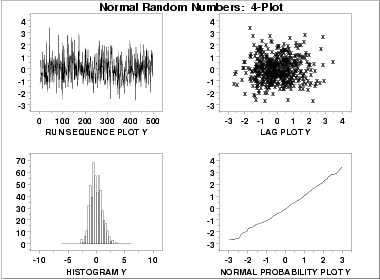
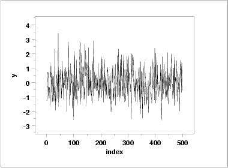
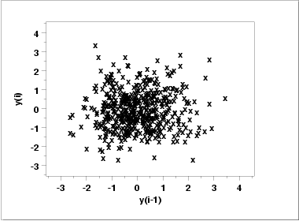
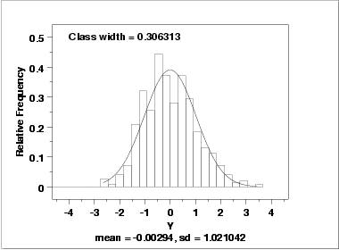
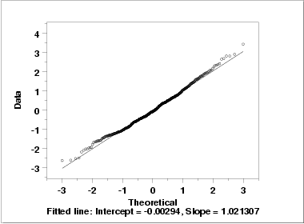

|
1.
Exploratory Data Analysis
1.4. EDA Case Studies 1.4.2. Case Studies 1.4.2.1. Normal Random Numbers
|
|||
| Goal |
The goal of this analysis is threefold:
|
||
| 4-Plot of Data |  | ||
| Interpretation |
The assumptions are addressed by the graphics shown above:
From the above plots, we conclude that the underlying assumptions are valid and the data follow approximately a normal distribution. Therefore, the confidence interval form given previously is appropriate for quantifying the uncertainty of the population mean. The numerical values for this model are given in the Quantitative Output and Interpretation section. |
||
| Individual Plots | Although it is usually not necessary, the plots can be generated individually to give more detail. | ||
| Run Sequence Plot |  | ||
| Lag Plot |  | ||
| Histogram (with overlaid Normal PDF) |  | ||
| Normal Probability Plot |  | ||